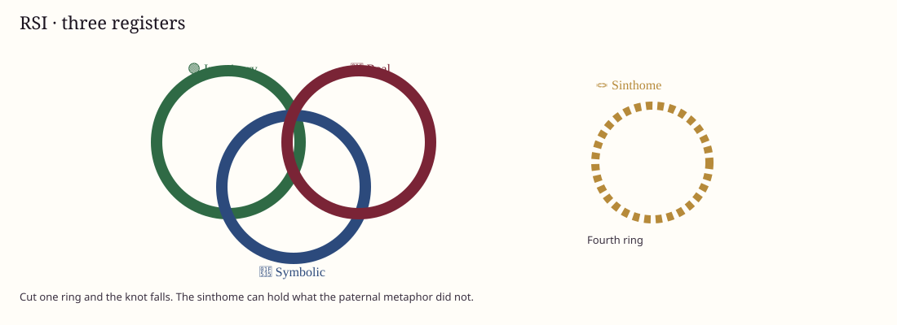

🪢 RSI · Borromean knot
🟣 Imaginary, Symbolic, Real
Not layers of a mind: three ways experience is ordered. 📘 Meaning is 🔵 Symbolic, 🪞 proof 🟢 Imaginary, ⚡ trauma 🔴 Real. The 🪢 sinthome can be a fourth ring.

🟢 Imaginary
Images, identification, the ego, the gaze, rivalry. Where the subject looks for proof.
🔵 Symbolic
Language, law, kinship, the Name-of-the-Father, the Big Other. Where the subject looks for meaning.
🔴 Real
What will not be imaged or said. Lack, jouissance, leftover. Where the cycle meets the impossible.
A Borromean knot: cut one ring and all three fall. Psychosis is a failure of the Symbolic knot. A sinthome can restitch what the paternal metaphor did not hold.